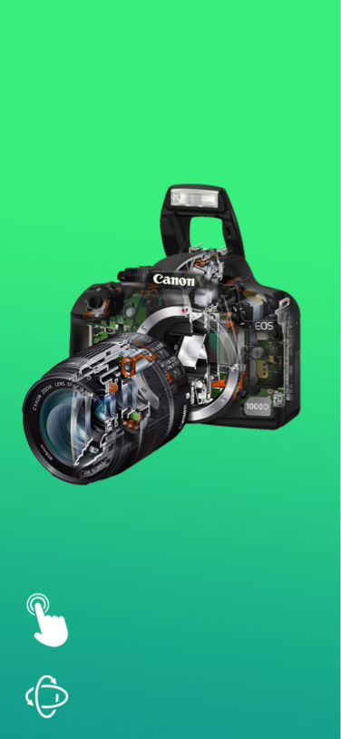
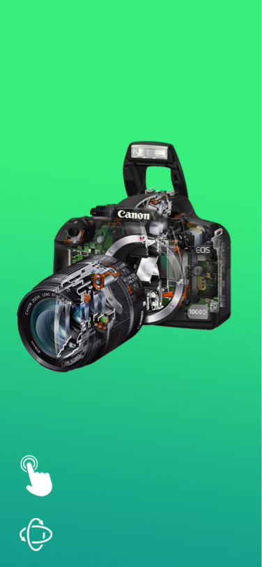

design.

Konzeption – Wenn Visionen greifbar werden
Am Anfang steht erstmal die Idee. Doch was kommt dann? Wie kann aus dieser Idee ein beeindruckendes Medienprodukt werden? Hier kommt die Konzeption ins Spiel. Ein gutes Konzept bündelt nicht nur die Ideen und Visionen, sondern sorgt auch für Struktur. Und diese Struktur ist essenziel für eine reibungslose Erschaffung von Medieninhalten.
Als Medienkonzeptionist (Bachelor of Arts) bin ich der Architekt Ihres Medienprodukts. Sei es eine intuitive Benutzeroberfläche, eine ansprechende Gestaltung oder eine technisch hervorragende Funktionalität. Für all dies lege ich den ersten Grundstein. Ich übersetze Ihre Visionen in konkrete Strategien, entwerfe detaillierte Pläne und sorge dafür, dass Ihr Medienprojekt nicht nur visuell ansprechend, sondern auch funktional und zielgruppenorientiert ist. So wird aus einer bloßen Idee ein greifbares und wirkungsvolles Erlebnis.
Das Konzept ist die wichtigste Säule bei der Schöpfung neuer Medieninhalte. Es ist der Fahrplan, der aus einer Skizze ein Meisterwerk entstehen lässt, der die Komplexität reduziert und den gesamten Schaffensprozess zielgerichtet und effizient gestaltet.
Ein gutes Konzept ist wie eine gute IKEA-Anleitung. Es vereinfacht den weiteren Aufbau enorm.
UX/UI Design – Benutzerfreundliche Erlebnisse schaffen
Als UX (User Experience) Designer konzentriere ich mich darauf, Produkte und Services so zu entwickeln, dass sie einfach, effizient und angenehm zu nutzen sind. Mir geht es darum, die Bedürfnisse der Nutzer zu verstehen – was sie motiviert und wie sie ticken. Darauf aufbauend gestalte ich dann Lösungen, die echte Probleme lösen und den Menschen Freude bereiten. Ich denke dabei über die gesamte Reise eines Nutzers nach, von der ersten Berührung mit einem Produkt bis zur regelmäßigen Nutzung.
Der UI (User Interface) Designer Part von mir kümmert sich um die visuelle und interaktive Gestaltung der Oberfläche. Hier geht's um das Aussehen: Farben, Schriften, Layouts und wie interaktive Elemente wie Buttons und Menüs aussehen und funktionieren. Das Ziel ist immer eine Oberfläche, die nicht nur gut aussieht, sondern auch logisch aufgebaut ist und Nutzer intuitiv durch die Anwendung führt. UX und UI gehen Hand in Hand: UX definiert, was gebraucht wird, und UI gibt dem Ganzen dann ein Gesicht und ein Gefühl.
Projekte
HFU-App
Während meines Studiums habe ich an der Konzeption und Gestaltung einer App gearbeitet, die den Studierenden das Leben erleichtern soll. Die Screenshots zeigen Entwürfe dieser App, die verschiedene wichtige Uni-Dienste wie FELIX, das Intranet und studentische E-Mails in einer zentralen, einfach zu bedienenden Oberfläche zusammenführt. Mein Ziel war es, die Informationsflut zu reduzieren und den Zugang zu wichtigen Ressourcen zu vereinfachen.


 

Interface-Design für autonome Fahrzeuge
Die folgenden zwei Screenshots geben einen Einblick in ein weiteres Studienprojekt: das Interface-Design für ein selbstfahrendes Auto im Jahr 2050. Hier ging es darum, eine Vision für zukünftige Mobilität zu entwickeln und diese in einer intuitiven Benutzeroberfläche darzustellen. Die Herausforderung war, die komplexen Informationen eines autonomen Systems für den Passagier verständlich und zugänglich zu machen.


Mein Ziel: Durchdachtes Design für digitale Erlebnisse, die einfach funktionieren.
Animation – Bewegung, die begeistert
Animation ist die Kunst, stehende Bilder zum Leben zu erwecken und Geschichten durch Bewegung zu erzählen. Egal ob für Erklärvideos, Produkt-Demos, interaktive Elemente oder Filmsequenzen – bewegte Inhalte ziehen die Aufmerksamkeit an und bringen Botschaften auf eine ganz besondere Art rüber.
Ich habe solides Wissen und praktische Erfahrung in der 2D- und 3D-Animation sowie im 3D-Modellieren. Das hilft mir, Konzepte nicht nur gut aussehen zu lassen, sondern sie auch dynamisch und erlebbar zu machen.
Meine Hauptwerkzeuge sind Blender für vielseitiges 3D-Modellieren und Animieren sowie Adobe After Effects für professionelle 2D-Animationen, Bewegtgrafiken und die Nachbearbeitung. Mit diesen Programmen kann ich komplexe Szenen visualisieren, Figuren animieren oder Daten in fesselnde Bilder verwandeln.
Animations-Videos:
Logos - Identität, die bleibt
Ein Logo ist viel mehr als nur ein Bild. Es ist das Herzstück der visuellen Identität einer Firma oder Marke. Es ist der erste Eindruck, ein Versprechen und der optische Anker, der im Gedächtnis bleibt. Ein gutes Logo vermittelt Werte, Gefühle und Professionalität – oft mit nur wenigen Linien und Farben.
Ich entwickle mit Leidenschaft Logos, die nicht nur gut aussehen, sondern auch den Kern einer Marke einfangen. Es ist meine Aufgabe, einzigartige und einprägsame Zeichen zu schaffen, die lange relevant bleiben und eine starke Verbindung zur Zielgruppe aufbauen.
Ausgewählte Entwürfe
Die ersten beiden Bilder zeigen mein eigenes Logo - einmal in seiner dunklen und einmal in seiner hellen Variante. Es steht für meine Philosophie und wie ich kreativ arbeite. Die anderen vier Bilder zeigen Ideen für mein Logo, die ich ausprobiert, aber letztlich nicht umgesetzt habe.
Starke Marken beginnen mit einem starken Logo.
Über Mich

Mein Name ist Lasse Sündermann, und ich bin ein vielseitiger Mediendesigner und mehr. Meine Expertise erstreckt sich über ein breites Spektrum digitaler Medien: von der Videoproduktion über 3D- und 2D-Animation bis hin zu Webdesign und -entwicklung.
Geboren im Jahr 1990, schloss ich meine schulische Ausbildung 2012 mit dem Abitur ab. Anschließend sammelte ich vielfältige Berufserfahrungen in verschiedenen Anstellungen. Mein beruflicher Werdegang vor dem Studium reichte vom Postzusteller über Nachhilfelehrer bis hin zu einer Tätigkeit bei der ich Steine sortierern musste (lol). Eine besonders prägende Erfahrung war zudem ein dreimonatiges Praktikum bei einer ARD-Fernsehfilmproduktion, das mir erste Einblicke in die Medienbranche ermöglichte.
Um meine Kenntnisse weiter zu vertiefen und meine Leidenschaft für Medien professionell zu festigen, begann ich Ende 2019 ein Studium im Bereich Medienkonzeption, welches ich 2024 erfolgreich abgeschlossen habe.
Videos – Geschichten in Bewegung erzählen
Die Welt des Videos finde ich unglaublich spannend, weil man damit Botschaften nicht nur rüberbringt, sondern sie für Zuschauer zu einem echten Erlebnis macht. Meine Begeisterung für die Videoproduktion treibt mich an, jedes Projekt mit viel Leidenschaft und Sorgfalt umzusetzen.
Im Studium hab ich mir ein solides Fundament in der Videoproduktion aufgebaut. Das heißt, ich kenne mich gut aus mit dem richtigen Licht, um die gewünschte Stimmung zu treffen, beherrsche verschiedene Kameratechniken für tolle Aufnahmen, weiß, wie man einen präzisen Schnitt macht, damit alles im Fluss bleibt, achte auf eine klare Vertonung und überlege mir eine ansprechende Bildgestaltung.
Praktische Erfahrungen konnte ich bereits 2013 während eines dreimonatigen Praktikums im Szenenbild beim Film "Im Spinnwebhaus" sammeln. Diese Zeit gab mir wertvolle Einblicke in die komplexen Abläufe einer professionellen Filmproduktion.
Beim verlinkten Video habe ich vielseitig mitgewirkt: Am ersten Drehtag kümmerte ich mich um Licht und B-Kamera, am zweiten um den Ton, und am Ende war ich mit für den Schnitt zuständig.
Storytelling & Creative Writing - Jede Botschaft eine Geschichte
In unserer Informationsflut ist es die Geschichte, die uns wirklich erreicht und im Kopf bleibt. Storytelling ist die stärkste Art, etwas zu kommunizieren, denn es macht Fakten zu emotionalen Erlebnissen und schafft eine tiefe Verbindung zum Publikum. Egal ob für Marken, Produkte oder komplexe Ideen – eine gut erzählte Geschichte ist der Schlüssel zum Erfolg.
Dank meiner Fähigkeiten im Creative Writing kann ich einzigartige Geschichten entwickeln, die genau zu deinen Zielen passen. Ich weiß, wie man Inhalte so formuliert, dass sie nicht nur informieren, sondern auch mitreißen und inspirieren.
Besonders bei Videos und Filmen ist eine starke Geschichte unerlässlich. Ich habe gelernt, wie man diese Erzählstrukturen auch für audiovisuelle Medien anpasst und schreibe Drehbücher. Von der ersten Idee über die Charaktere bis hin zum detaillierten Dialog – ich schaffe das Fundament für fesselnde Filme, Werbespots oder multimediale Projekte.
Meine Geschichten:
Impressum
Lasse Sündermann
Jägerhofallee 75
71638 Ludwigsburg
Datenschutzerklärung
1. Datenschutz auf einen Blick
Allgemeine Hinweise
Die folgenden Hinweise geben einen einfachen Überblick darüber, was mit Ihren personenbezogenen Daten passiert, wenn Sie diese Website besuchen. Personenbezogene Daten sind alle Daten, mit denen Sie persönlich identifiziert werden können. Ausführliche Informationen zum Thema Datenschutz entnehmen Sie unserer unter diesem Text aufgeführten Datenschutzerklärung.
Datenerfassung auf dieser Website
Wer ist verantwortlich für die Datenerfassung auf dieser Website?
Die Datenverarbeitung auf dieser Website erfolgt durch den Websitebetreiber. Dessen Kontaktdaten können Sie dem Abschnitt „Hinweis zur Verantwortlichen Stelle“ in dieser Datenschutzerklärung entnehmen.
Wie erfassen wir Ihre Daten?
Ihre Daten werden zum einen dadurch erhoben, dass Sie uns diese mitteilen. Hierbei kann es sich z. B. um Daten handeln, die Sie in ein Kontaktformular eingeben.
Andere Daten werden automatisch oder nach Ihrer Einwilligung beim Besuch der Website durch unsere IT-Systeme erfasst. Das sind vor allem technische Daten (z. B. Internetbrowser, Betriebssystem oder Uhrzeit des Seitenaufrufs). Die Erfassung dieser Daten erfolgt automatisch, sobald Sie diese Website betreten.
Wofür nutzen wir Ihre Daten?
Ein Teil der Daten wird erhoben, um eine fehlerfreie Bereitstellung der Website zu gewährleisten. Andere Daten können zur Analyse Ihres Nutzerverhaltens verwendet werden.
Welche Rechte haben Sie bezüglich Ihrer Daten?
Sie haben jederzeit das Recht, unentgeltlich Auskunft über Herkunft, Empfänger und Zweck Ihrer gespeicherten personenbezogenen Daten zu erhalten. Sie haben außerdem ein Recht, die Berichtigung oder Löschung dieser Daten zu verlangen. Wenn Sie eine Einwilligung zur Datenverarbeitung erteilt haben, können Sie diese Einwilligung jederzeit für die Zukunft widerrufen. Außerdem haben Sie das Recht, unter bestimmten Umständen die Einschränkung der Verarbeitung Ihrer personenbezogenen Daten zu verlangen. Des Weiteren steht Ihnen ein Beschwerderecht bei der zuständigen Aufsichtsbehörde zu.
Hierzu sowie zu weiteren Fragen zum Thema Datenschutz können Sie sich jederzeit an uns wenden.
Analyse-Tools und Tools von Drittanbietern
Beim Besuch dieser Website kann Ihr Surf-Verhalten statistisch ausgewertet werden. Das geschieht vor allem mit sogenannten Analyseprogrammen.
Detaillierte Informationen zu diesen Analyseprogrammen finden Sie in der folgenden Datenschutzerklärung.
2. Hosting
Wir hosten die Inhalte unserer Website bei folgendem Anbieter:
Externes Hosting
Diese Website wird extern gehostet. Die personenbezogenen Daten, die auf dieser Website erfasst werden, werden auf den Servern des Hosters / der Hoster gespeichert. Hierbei kann es sich v. a. um IP-Adressen, Kontaktanfragen, Meta- und Kommunikationsdaten, Vertragsdaten, Kontaktdaten, Namen, Websitezugriffe und sonstige Daten, die über eine Website generiert werden, handeln.
Das externe Hosting erfolgt zum Zwecke der Vertragserfüllung gegenüber unseren potenziellen und bestehenden Kunden (Art. 6 Abs. 1 lit. b DSGVO) und im Interesse einer sicheren, schnellen und effizienten Bereitstellung unseres Online-Angebots durch einen professionellen Anbieter (Art. 6 Abs. 1 lit. f DSGVO). Sofern eine entsprechende Einwilligung abgefragt wurde, erfolgt die Verarbeitung ausschließlich auf Grundlage von Art. 6 Abs. 1 lit. a DSGVO und § 25 Abs. 1 TDDDG, soweit die Einwilligung die Speicherung von Cookies oder den Zugriff auf Informationen im Endgerät des Nutzers (z. B. Device-Fingerprinting) im Sinne des TDDDG umfasst. Die Einwilligung ist jederzeit widerrufbar.
Unser(e) Hoster wird bzw. werden Ihre Daten nur insoweit verarbeiten, wie dies zur Erfüllung seiner Leistungspflichten erforderlich ist und unsere Weisungen in Bezug auf diese Daten befolgen.
Wir setzen folgende(n) Hoster ein:
GitHub Inc.
88 Colin P Kelly Jr St
San Francisco, CA 94107
Vereinigte Staaten
3. Allgemeine Hinweise und Pflichtinformationen
Datenschutz
Die Betreiber dieser Seiten nehmen den Schutz Ihrer persönlichen Daten sehr ernst. Wir behandeln Ihre personenbezogenen Daten vertraulich und entsprechend den gesetzlichen Datenschutzvorschriften sowie dieser Datenschutzerklärung.
Wenn Sie diese Website benutzen, werden verschiedene personenbezogene Daten erhoben. Personenbezogene Daten sind Daten, mit denen Sie persönlich identifiziert werden können. Die vorliegende Datenschutzerklärung erläutert, welche Daten wir erheben und wofür wir sie nutzen. Sie erläutert auch, wie und zu welchem Zweck das geschieht.
Wir weisen darauf hin, dass die Datenübertragung im Internet (z. B. bei der Kommunikation per E-Mail) Sicherheitslücken aufweisen kann. Ein lückenloser Schutz der Daten vor dem Zugriff durch Dritte ist nicht möglich.
Hinweis zur verantwortlichen Stelle
Die verantwortliche Stelle für die Datenverarbeitung auf dieser Website ist:
Lasse Sündermann
Jägerhofallee 75
71638 Ludwigsburg
Telefon: +4917642071093
E-Mail: lasse.suendermann@web.de
Verantwortliche Stelle ist die natürliche oder juristische Person, die allein oder gemeinsam mit anderen über die Zwecke und Mittel der Verarbeitung von personenbezogenen Daten (z. B. Namen, E-Mail-Adressen o. Ä.) entscheidet.
Speicherdauer
Soweit innerhalb dieser Datenschutzerklärung keine speziellere Speicherdauer genannt wurde, verbleiben Ihre personenbezogenen Daten bei uns, bis der Zweck für die Datenverarbeitung entfällt. Wenn Sie ein berechtigtes Löschersuchen geltend machen oder eine Einwilligung zur Datenverarbeitung widerrufen, werden Ihre Daten gelöscht, sofern wir keine anderen rechtlich zulässigen Gründe für die Speicherung Ihrer personenbezogenen Daten haben (z. B. steuer- oder handelsrechtliche Aufbewahrungsfristen); im letztgenannten Fall erfolgt die Löschung nach Fortfall dieser Gründe.
Allgemeine Hinweise zu den Rechtsgrundlagen der Datenverarbeitung auf dieser Website
Sofern Sie in die Datenverarbeitung eingewilligt haben, verarbeiten wir Ihre personenbezogenen Daten auf Grundlage von Art. 6 Abs. 1 lit. a DSGVO bzw. Art. 9 Abs. 2 lit. a DSGVO, sofern besondere Datenkategorien nach Art. 9 Abs. 1 DSGVO verarbeitet werden. Im Falle einer ausdrücklichen Einwilligung in die Übertragung personenbezogener Daten in Drittstaaten erfolgt die Datenverarbeitung außerdem auf Grundlage von Art. 49 Abs. 1 lit. a DSGVO. Sofern Sie in die Speicherung von Cookies oder in den Zugriff auf Informationen in Ihr Endgerät (z. B. via Device-Fingerprinting) eingewilligt haben, erfolgt die Datenverarbeitung zusätzlich auf Grundlage von § 25 Abs. 1 TDDDG. Die Einwilligung ist jederzeit widerrufbar. Sind Ihre Daten zur Vertragserfüllung oder zur Durchführung vorvertraglicher Maßnahmen erforderlich, verarbeiten wir Ihre Daten auf Grundlage des Art. 6 Abs. 1 lit. b DSGVO. Des Weiteren verarbeiten wir Ihre Daten, sofern diese zur Erfüllung einer rechtlichen Verpflichtung erforderlich sind auf Grundlage von Art. 6 Abs. 1 lit. c DSGVO. Die Datenverarbeitung kann ferner auf Grundlage unseres berechtigten Interesses nach Art. 6 Abs. 1 lit. f DSGVO erfolgen. Über die jeweils im Einzelfall einschlägigen Rechtsgrundlagen wird in den folgenden Absätzen dieser Datenschutzerklärung informiert.
Empfänger von personenbezogenen Daten
Im Rahmen unserer Geschäftstätigkeit arbeiten wir mit verschiedenen externen Stellen zusammen. Dabei ist teilweise auch eine Übermittlung von personenbezogenen Daten an diese externen Stellen erforderlich. Wir geben personenbezogene Daten nur dann an externe Stellen weiter, wenn dies im Rahmen einer Vertragserfüllung erforderlich ist, wenn wir gesetzlich hierzu verpflichtet sind (z. B. Weitergabe von Daten an Steuerbehörden), wenn wir ein berechtigtes Interesse nach Art. 6 Abs. 1 lit. f DSGVO an der Weitergabe haben oder wenn eine sonstige Rechtsgrundlage die Datenweitergabe erlaubt. Beim Einsatz von Auftragsverarbeitern geben wir personenbezogene Daten unserer Kunden nur auf Grundlage eines gültigen Vertrags über Auftragsverarbeitung weiter. Im Falle einer gemeinsamen Verarbeitung wird ein Vertrag über gemeinsame Verarbeitung geschlossen.
Widerruf Ihrer Einwilligung zur Datenverarbeitung
Viele Datenverarbeitungsvorgänge sind nur mit Ihrer ausdrücklichen Einwilligung möglich. Sie können eine bereits erteilte Einwilligung jederzeit widerrufen. Die Rechtmäßigkeit der bis zum Widerruf erfolgten Datenverarbeitung bleibt vom Widerruf unberührt.
Widerspruchsrecht gegen die Datenerhebung in besonderen Fällen sowie gegen Direktwerbung (Art. 21 DSGVO)
WENN DIE DATENVERARBEITUNG AUF GRUNDLAGE VON ART. 6 ABS. 1 LIT. E ODER F DSGVO ERFOLGT, HABEN SIE JEDERZEIT DAS RECHT, AUS GRÜNDEN, DIE SICH AUS IHRER BESONDEREN SITUATION ERGEBEN, GEGEN DIE VERARBEITUNG IHRER PERSONENBEZOGENEN DATEN WIDERSPRUCH EINZULEGEN; DIES GILT AUCH FÜR EIN AUF DIESE BESTIMMUNGEN GESTÜTZTES PROFILING. DIE JEWEILIGE RECHTSGRUNDLAGE, AUF DENEN EINE VERARBEITUNG BERUHT, ENTNEHMEN SIE DIESER DATENSCHUTZERKLÄRUNG. WENN SIE WIDERSPRUCH EINLEGEN, WERDEN WIR IHRE BETROFFENEN PERSONENBEZOGENEN DATEN NICHT MEHR VERARBEITEN, ES SEI DENN, WIR KÖNNEN ZWINGENDE SCHUTZTWÜRDIGE GRÜNDE FÜR DIE VERARBEITUNG NACHWEISEN, DIE IHRE INTERESSEN, RECHTE UND FREIHEITEN ÜBERWIEGEN ODER DIE VERARBEITUNG DIENT DER GELTENDMACHUNG, AUSÜBUNG ODER VERTEIDIGUNG VON RECHTSANSPRÜCHEN (WIDERSPRUCH NACH ART. 21 ABS. 1 DSGVO).
WERDEN IHRE PERSONENBEZOGENEN DATEN VERARBEITET, UM DIREKTWERBUNG ZU BETREIBEN, SO HABEN SIE DAS RECHT, JEDERZEIT WIDERSPRUCH GEGEN DIE VERARBEITUNG SIE BETREFFENDER PERSONENBEZOGENER DATEN ZUM ZWECKE DERARTIGER WERBUNG EINZULEGEN; DIES GILT AUCH FÜR DAS PROFILING, SOWEIT ES MIT SOLCHER DIREKTWERBUNG IN VERBINDUNG STEHT. WENN SIE WIDERSPRECHEN, WERDEN IHRE PERSONENBEZOGENEN DATEN ANSCHLIESSEND NICHT MEHR ZUM ZWECKE DER DIREKTWERBUNG VERWENDET (WIDERSPRUCH NACH ART. 21 ABS. 2 DSGVO).
Beschwerderecht bei der zuständigen Aufsichtsbehörde
Im Falle von Verstößen gegen die DSGVO steht den Betroffenen ein Beschwerderecht bei einer Aufsichtsbehörde, insbesondere in dem Mitgliedstaat ihres gewöhnlichen Aufenthalts, ihres Arbeitsplatzes oder des Orts des mutmaßlichen Verstoßes zu. Das Beschwerderecht besteht unbeschadet anderweitiger verwaltungsrechtlicher oder gerichtlicher Rechtsbehelfe.
Recht auf Datenübertragbarkeit
Sie haben das Recht, Daten, die wir auf Grundlage Ihrer Einwilligung oder in Erfüllung eines Vertrags automatisiert verarbeiten, an sich oder an einen Dritten in einem gängigen, maschinenlesbaren Format aushändigen zu lassen. Sofern Sie die direkte Übertragung der Daten an einen anderen Verantwortlichen verlangen, erfolgt dies nur, soweit es technisch machbar ist.
Auskunft, Berichtigung und Löschung
Sie haben im Rahmen der geltenden gesetzlichen Bestimmungen jederzeit das Recht auf unentgeltliche Auskunft über Ihre gespeicherten personenbezogenen Daten, deren Herkunft und Empfänger und den Zweck der Datenverarbeitung und ggf. ein Recht auf Berichtigung oder Löschung dieser Daten. Hierzu sowie zu weiteren Fragen zum Thema personenbezogene Daten können Sie sich jederzeit an uns wenden.
Recht auf Einschränkung der Verarbeitung
Sie haben das Recht, die Einschränkung der Verarbeitung Ihrer personenbezogenen Daten zu verlangen. Hierzu können Sie sich jederzeit an uns wenden. Das Recht auf Einschränkung der Verarbeitung besteht in folgenden Fällen:
- Wenn Sie die Richtigkeit Ihrer bei uns gespeicherten personenbezogenen Daten bestreiten, benötigen wir in der Regel Zeit, um dies zu überprüfen. Für die Dauer der Prüfung haben Sie das Recht, die Einschränkung der Verarbeitung Ihrer personenbezogenen Daten zu verlangen.
- Wenn die Verarbeitung Ihrer personenbezogenen Daten unrechtmäßig geschah/geschieht, können Sie statt der Löschung die Einschränkung der Datenverarbeitung verlangen.
- Wenn wir Ihre personenbezogenen Daten nicht mehr benötigen, Sie sie jedoch zur Ausübung, Verteidigung oder Geltendmachung von Rechtsansprüchen benötigen, haben Sie das Recht, statt der Löschung die Einschränkung der Verarbeitung Ihrer personenbezogenen Daten zu verlangen.
- Wenn Sie einen Widerspruch nach Art. 21 Abs. 1 DSGVO eingelegt haben, muss eine Abwägung zwischen Ihren und unseren Interessen vorgenommen werden. Solange noch nicht feststeht, wessen Interessen überwiegen, haben Sie das Recht, die Einschränkung der Verarbeitung Ihrer personenbezogenen Daten zu verlangen.
Wenn Sie die Verarbeitung Ihrer personenbezogenen Daten eingeschränkt haben, dürfen diese Daten – von ihrer Speicherung abgesehen – nur mit Ihrer Einwilligung oder zur Geltendmachung, Ausübung oder Verteidigung von Rechtsansprüchen oder zum Schutz der Rechte einer anderen natürlichen oder juristischen Person oder aus Gründen eines wichtigen öffentlichen Interesses der Europäischen Union oder eines Mitgliedstaats verarbeitet werden.
4. Plugins und Tools
YouTube mit erweitertem Datenschutz
Diese Website bindet Videos der Website YouTube ein. Betreiber der Website ist die Google Ireland Limited („Google”), Gordon House, Barrow Street, Dublin 4, Irland.
Wenn Sie eine dieser Website besuchen, auf denen YouTube eingebunden ist, wird eine Verbindung zu den Servern von YouTube hergestellt. Dabei wird dem YouTube-Server mitgeteilt, welche unserer Seiten Sie besucht haben. Wenn Sie in Ihrem YouTube-Account eingeloggt sind, ermöglichen Sie YouTube, Ihr Surfverhalten direkt Ihrem persönlichen Profil zuzuordnen. Dies können Sie verhindern, indem Sie sich aus Ihrem YouTube-Account ausloggen.
Wir nutzen YouTube im erweiterten Datenschutzmodus. Videos, die im erweiterten Datenschutzmodus abgespielt werden, werden nach Aussage von YouTube nicht zur Personalisierung des Surfens auf YouTube eingesetzt. Anzeigen, die im erweiterten Datenschutzmodus ausgespielt werden, sind ebenfalls nicht personalisiert. Im erweiterten Datenschutzmodus werden keine Cookies gesetzt. Stattdessen werden jedoch sogenannte Local Storage Elemente im Browser des Users gespeichert, die ähnlich wie Cookies personenbezogene Daten beinhalten und zur Wiedererkennung eingesetzt werden können. Details zum erweiterten Datenschutzmodus finden Sie hier: https://support.google.com/youtube/answer/171780.
Gegebenenfalls können nach der Aktivierung eines YouTube-Videos weitere Datenverarbeitungsvorgänge ausgelöst werden, auf die wir keinen Einfluss haben.
Die Nutzung von YouTube erfolgt im Interesse einer ansprechenden Darstellung unserer Online-Angebote. Dies stellt ein berechtigtes Interesse im Sinne von Art. 6 Abs. 1 lit. f DSGVO dar. Sofern eine entsprechende Einwilligung abgefragt wurde, erfolgt die Verarbeitung ausschließlich auf Grundlage von Art. 6 Abs. 1 lit. a DSGVO und § 25 Abs. 1 TDDDG, soweit die Einwilligung die Speicherung von Cookies oder den Zugriff auf Informationen im Endgerät des Nutzers (z. B. Device-Fingerprinting) im Sinne des TDDDG umfasst. Die Einwilligung ist jederzeit widerrufbar.
Weitere Informationen über Datenschutz bei YouTube finden Sie in deren Datenschutzerklärung unter: https://policies.google.com/privacy?hl=de.
Das Unternehmen verfügt über eine Zertifizierung nach dem „EU-US Data Privacy Framework“ (DPF). Der DPF ist ein Übereinkommen zwischen der Europäischen Union und den USA, der die Einhaltung europäischer Datenschutzstandards bei Datenverarbeitungen in den USA gewährleisten soll. Jedes nach dem DPF zertifizierte Unternehmen verpflichtet sich, diese Datenschutzstandards einzuhalten. Weitere Informationen hierzu erhalten Sie vom Anbieter unter folgendem Link: https://www.dataprivacyframework.gov/participant/5780.
Quelle: https://www.e-recht24.de